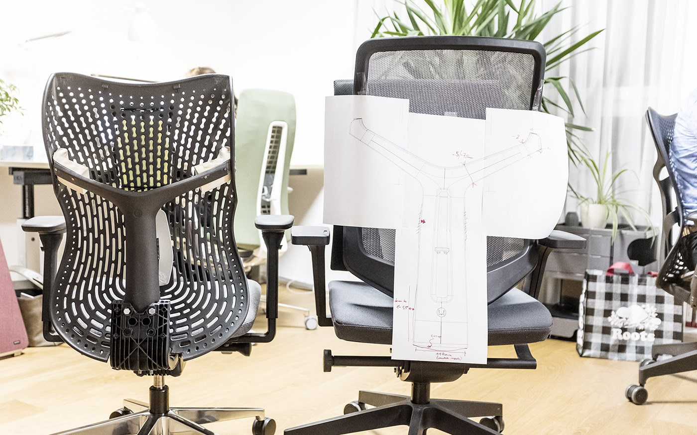
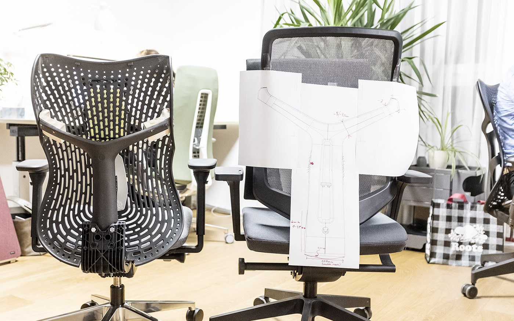
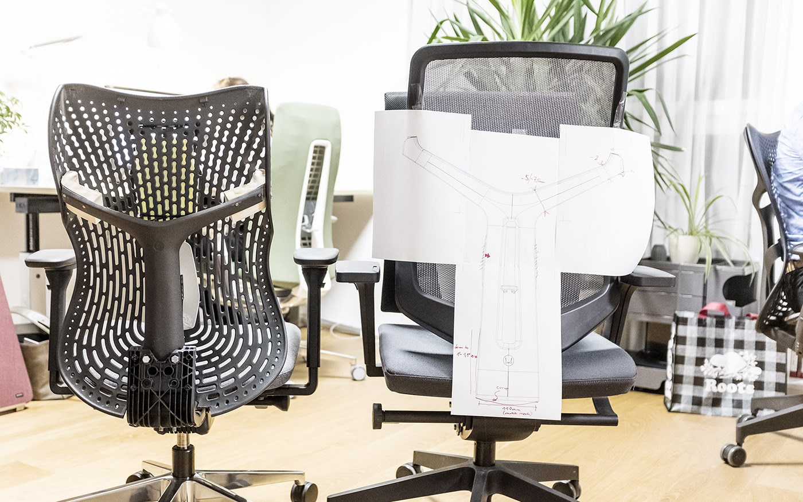

Herman Miller approached ITO to extend the Verus task chair family with a new plastic backrest design. The Triflex back takes cues from the ergonomics of existing Herman Miller products, but simplifies the elements for a lower cost chair.
Prototypes played a critical role in defining the design. After many tests, we found an efficient and simple solution:‘folding‘ the upper sides of the backrest to create a reinforced rib. This allowed us to reduce plastic waste while maintaining support for the upper back.
Computational design techniques were used to create localised flexion zones across the backrest by varying hole size and shape. The result was a backrest that that provides good ergonomic comfort at much lower price point than mesh or upholstered chairs.
